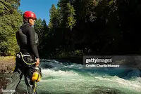

Meet Our Guides
With decades of river wisdom and certified training, our guides combine passion, skill, and deep respect for the wild. Whether you're a first-timer or a seasoned paddler, we ensure your ride is safe, thrilling, and tailored to your comfort level.